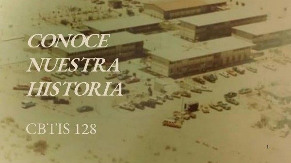
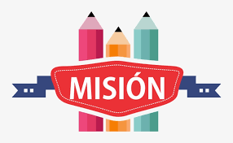
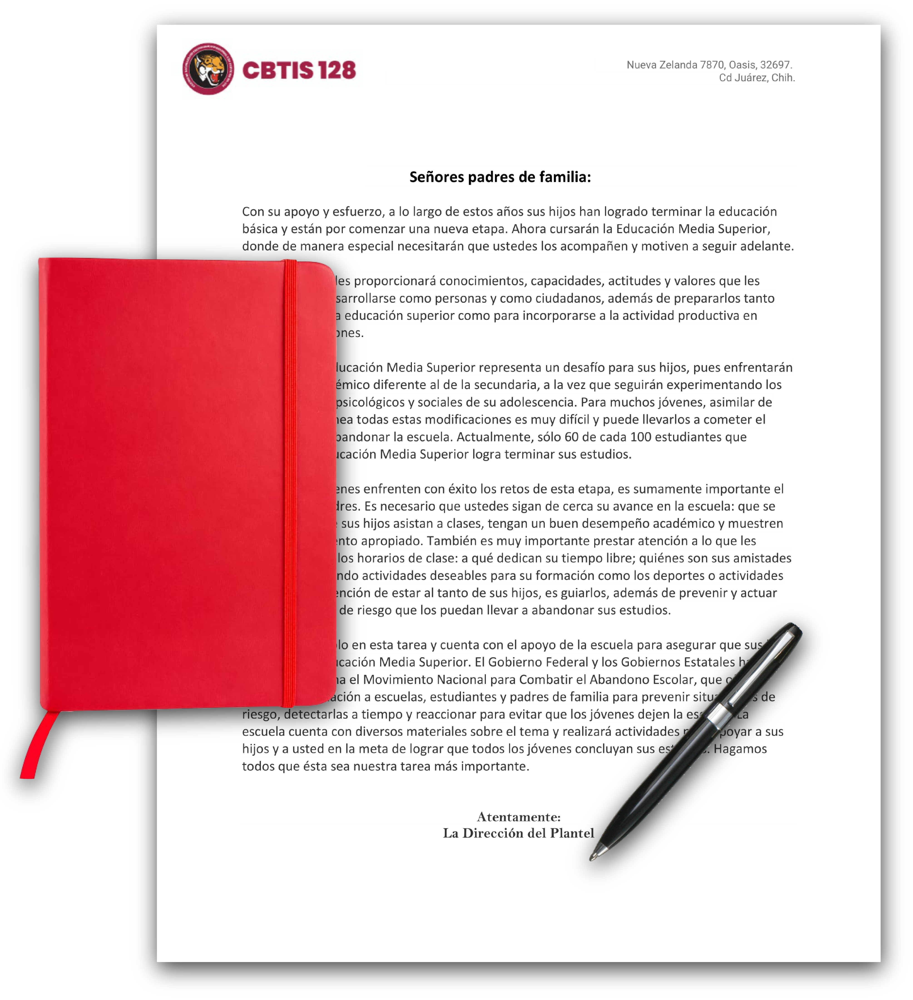

C.B.T.i.s No. 128
Historia:
El 17 de Abril de 1971 es publicado en el Diario Oficial de la Federacionel acuerdo presidencial por el que se modifica la estructura organica administrativa de la SEP y se da paso a la creacion de la Direccion General de Educacion Tecnologica Industrial, como una dependencia adscrita a la Subsecretaria de Educacion Media Superior(SEMS), dependiendo de la Secretaria de Educacion Publica (SEP) que ofrece el servicio educativo del medio superior tecnologico, en Agosto de ese mismo año se publican las funciones que tendra esta institucion y se integran a ella los centros de capacitacion para el trabajo industrial, escuelas tecnologicas industriales, los centros de estudios tecnologicos en el Distrito Federal y los centros de estudios tecnologicos foraneos.
Actualmente en su 50 Aniversario de la DGETI es la institucion de educacion media superior mas grande del Pais, con una estructura fisica de 456 planteles educativos a nivel nacional, de los cuales 168 son CETis y 288 CBTis, De este Sistema Educativo (DGETI), nace el 1 septiembre de 1979, el Centro de Bachillerato Tecnologico industrial y de servicios No. 128 iniciando actividades con el nombre CECYT 432 en las instalaciones de la Secundaria Tecnica #15 ubicada en la calle Cerro de la Plata y calle Q, teniendo como principal objetivo formar tecnicos profesionales capaces de integrarse a laborar a la industria maquiladora.

Fuente:
Historia
Misión:
Ser el medio fundamental para Adquirir, Transmitir y Acreditar la Cultura Tecnológica, formando Bachilleres Técnicos con un alto Nivel Académico y Tecnológico, preparados para responder a las necesidades del Desarrollo Estatal, a la preservación de nuestros recursos naturales, a la producción, y el desarrollo de bienes y servicios, en una estrecha Vinculación con el Sector Productivo, Educativo, Gubernamental y Social.

Fuente:
Misión
Visión:
Ser un sistema Educativo de Excelencia, en los ámbitos Académicos, Tecnológicos y de Investigación, que satisfaga ampliamente los requerimientos de Recursos Humanos del Sector Productivo y de la Sociedad en el Estado de Chihuahua.
Fuente:
Visión
Política de calidad:
Formar y Desarrollar Integralmente a los Educandos del Sistema de Educación Tecnológica Industrial, en donde se manifieste el Avance y Desarrollo Tecnológico, la Experiencia del Personal Docente, Técnico, Administrativo y Directivo, reforzando los valores que los motiven a la calidad, creatividad y la mejora continua en los procesos institucionales para la satisfacción de nuestros clientes.
Fuente:
Politica de Calidad
Objetivo de calidad:
Satisfacer las necesidades y expectativas de la Sociedad en Educación Media Superior Tecnológica, a través de la formación de Bachilleres y Técnicos Profesionales que fortalezcan y desarrollen una Cultura Tecnológica y una Iinfraestructura Industrial y de Servicios con enfoque hacia la calidad.
Fuente:
Objetivo de Calidad
Mensaje del Director:
Señores padres de familia:
Con su apoyo y esfuerzo, a lo largo de estos años sus hijos han logrado terminar la educación básica y están por comenzar una nueva etapa. Ahora cursarán la Educación Media Superior, donde de manera especial necesitarán que ustedes los acompañen y motiven a seguir adelante.
Esta nueva fase les proporcionará conocimientos, capacidades, actitudes y valores que les servirán para desarrollarse como personas y como ciudadanos, además de prepararlos tanto para ingresar a la educación superior como para incorporarse a la actividad productiva en mejores condiciones.
El ingreso a la Educación Media Superior representa un desafío para sus hijos, pues enfrentarán un sistema académico diferente al de la secundaria, a la vez que seguirán experimentando los cambios físicos, psicológicos y sociales de su adolescencia. Para muchos jóvenes, asimilar de manera simultánea todas estas modificaciones es muy difícil y puede llevarlos a cometer el grave error de abandonar la escuela. Actualmente, sólo 60 de cada 100 estudiantes que ingresan a la Educación Media Superior logra terminar sus estudios.
Para que los jóvenes enfrenten con éxito los retos de esta etapa, es sumamente importante el apoyo de los padres. Es necesario que ustedes sigan de cerca su avance en la escuela: que se aseguren de que sus hijos asistan a clases, tengan un buen desempeño académico y muestren un comportamiento apropiado. También es muy importante prestar atención a lo que les sucede fuera de los horarios de clase: a qué dedican su tiempo libre; quiénes son sus amistades y si están realizando actividades deseables para su formación como los deportes o actividades artísticas. La intención de estar al tanto de sus hijos, es guiarlos, además de prevenir y actuar ante situaciones de riesgo que los puedan llevar a abandonar sus estudios.
Usted no está solo en esta tarea y cuenta con el apoyo de la escuela para asegurar que sus hijos concluyan la Educación Media Superior. El Gobierno Federal y los Gobiernos Estatales han puesto en marcha el Movimiento Nacional para Combatir el Abandono Escolar, que ofrece apoyo e información a escuelas, estudiantes y padres de familia para prevenir situaciones de riesgo, detectarlas a tiempo y reaccionar para evitar que los jóvenes dejen la escuela. La escuela cuenta con diversos materiales sobre el tema y realizará actividades para apoyar a sus hijos y a usted en la meta de lograr que todos los jóvenes concluyan sus estudios. Hagamos todos que ésta sea nuestra tarea más importante

Fuente:
Mensaje del Director